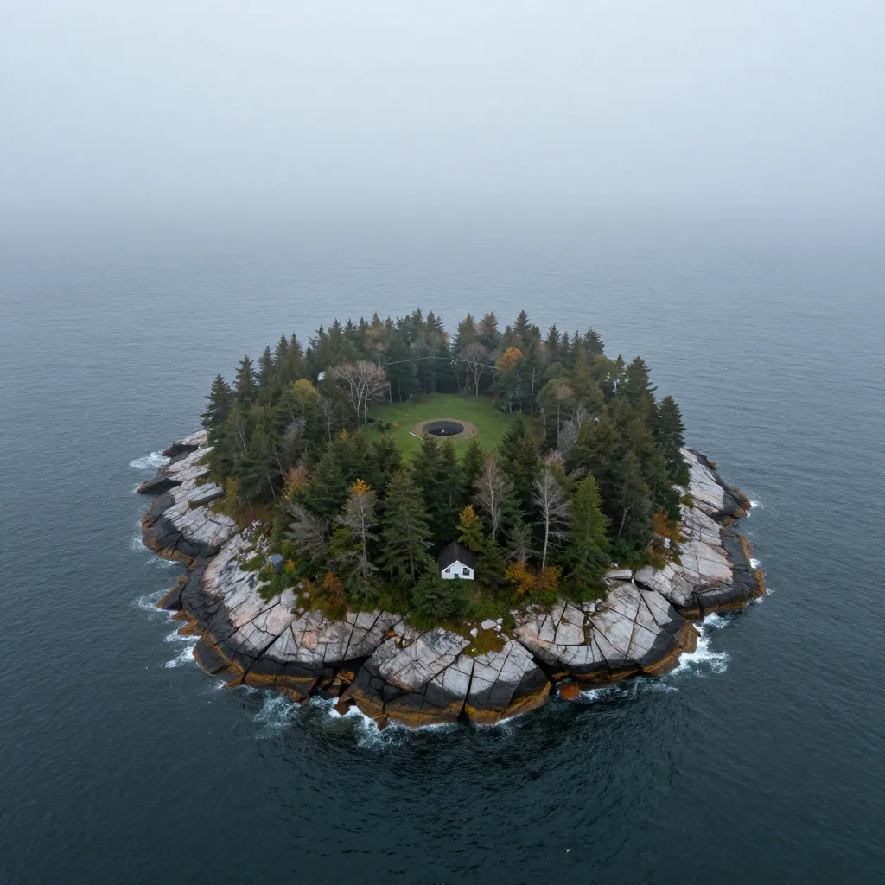

The Oak Island Money Pit: 200 Years of Treasure Hunting and the World's Most Famous Hole

It was the summer of 1795. A teenager named Daniel McGinnis was exploring a small island covered in trees in Mahone Bay, Nova Scotia. He noticed something strange. There was a round dip in the ground, about 13 feet across. It lay beneath an old oak tree with a sawed-off branch. A ship’s tackle block, a pulley used to lift heavy things, hung from the branch right above the hole.
McGinnis lived in a region full of tales of pirate treasure. To him, the meaning was clear. Someone had buried something here, and had worked hard to do it.
The next day McGinnis came back with two friends, John Smith and Anthony Vaughan. They had picks and shovels, and they began to dig. Just two feet down, they hit a layer of flat stones, laid with care. At ten feet, they found a platform of solid oak logs. At twenty feet, there was another. At thirty feet, there was yet another.
Each platform was the same. Oak logs spanned the whole shaft, and their ends were set firmly in the clay walls. Someone had built a deep, layered shaft to guard whatever lay at the bottom. The boys dug as far as they could, then gave up.
But they had started something that would not stop for over 230 years. The Oak Island Money Pit has since used up fortunes, ruined lives, and killed at least six people. It is one of the longest treasure hunts in history, and one of the most argued over.
The story of Oak Island is more than a treasure hunt. It shows how people are drawn to hidden wealth and secret knowledge. This obsession has led men to spend fortunes, give their lives to the search, and literally dig themselves into the ground.
The Money Pit has attracted many kinds of people. Franklin Delano Roosevelt visited the island in 1909 and stayed interested for life. The modern Lagina brothers star in the History Channel’s The Curse of Oak Island.
Theories range from the possible to the fantastic. They include Captain Kidd’s treasure, Marie Antoinette’s jewels, the Holy Grail, the Ark of the Covenant, and the lost manuscripts of Francis Bacon. Skeptics, who doubt such claims, say the whole mystery is a coincidence of geology. They think it is a natural sinkhole that treasure hunters have mistaken for a made-by-hand vault.
McGinnis and his friends gave up their dig at 30 feet. The Money Pit then lay quiet for nearly a decade. In 1803, a group called the Onslow Company was formed to start digging again. They dug through the oak log platforms at 40, 50, 60, 70, and 80 feet. They found layers of coconut fiber and a blue clay putty that seemed to be a waterproof seal. Neither material came from Nova Scotia.
At 90 feet, they found a flat stone tablet about two feet long. It was covered with mysterious symbols. Someone later translated the writing, though people disagree about it. The translation said: “Forty feet below two million pounds are buried.”
The Onslow Company kept digging. But at about 95 feet, disaster struck. The shaft suddenly flooded with seawater, right up to the tide line. They pumped frantically, but the water could not be cleared.
The flood was no accident. Investigators found that the pit was linked to the Atlantic Ocean by a clever system of flood tunnels. A man-made channel ran from Smith’s Cove, on the eastern shore of Oak Island, to the Money Pit, about 500 feet inland. The tunnel was lined with coconut fiber, which worked as a filter, with beach stones and box drains. This made a trap that set itself off. When diggers reached the level of the tunnel’s opening, the ocean poured in on its own.
The system worked so well that over 200 years of pumping, drilling, and engineering have never cleared the shaft for good. Whoever designed the tunnels understood how water flows at a level that was remarkable for the 17th or 18th century.
In 1850, investigators found that the whole beach at Smith’s Cove had been built by hand. It was a giant drainage system. It sent seawater through filter layers into the flood tunnel. Some researchers think this was so advanced that only a rich, skilled organization could have built it. Others say natural features could explain the flooding with no human work at all. The limestone rock under Oak Island is full of natural holes.
In 1849, the Truro Company took up the hunt. It used a pod auger drill, a hollow drill bit that can bring up samples from deep underground. They bored into the Money Pit and found strong signs that something important lay below. At 98 feet, the drill hit what seemed to be a wooden platform or chest.
The auger brought up pieces of wood, coconut fiber, and, most tantalizing of all, three small gold chain links. Deeper drilling met a layer of material described as “metal in fragments” and a cement-like substance.
The Truro Company also tried to block the flood tunnels. It built a cofferdam, a temporary wall that holds back water, at Smith’s Cove. But the pit still flooded. This suggested that there were more flood tunnels that nobody had found.
In more than two centuries of treasure hunting, Oak Island has taken at least six lives. This feeds a legend that the Money Pit is cursed. The most famous version says that seven men must die before the treasure will be found.
A worker was killed in 1861 when a boiler exploded during pumping. He was the first recorded death. The worst day came on August 17, 1965. Robert Restall Sr. had worked on Oak Island since 1959. He was overcome by carbon monoxide, or possibly hydrogen sulfide, poisonous gases in a shaft, and he collapsed.
His son, Robert Restall Jr., dove in to save him and was also overcome. Two other men, Carl Graeser and Cyril Hiltz, tried to rescue them and also died. Four men died in one day. It is the darkest chapter in the history of Oak Island.
Is the curse real? Or is it only chance, after 230 years of dangerous digging? Either way, it has become a part of the Oak Island legend.
In 2014, the History Channel began showing The Curse of Oak Island. It followed the brothers Rick and Marty Lagina from Michigan. They were chasing a lifelong dream of solving the mystery of the Money Pit. The show became a huge hit. It ran for over ten seasons and brought the story to millions of viewers around the world.
The Laginas worked with a team of experts, including metal detector specialists, geologists, and historians. They used modern technology. This included ground-penetrating radar, seismic surveys, sonar mapping, and advanced drilling equipment.
What they found is intriguing but not conclusive. There were bone fragments deep down, both human and animal. There was a small piece of parchment or book-binding material. There were pieces of old wood that fit 18th-century building. There was coconut fiber deep underground. Sonar picked up metal objects that have not yet been recovered. There were also various objects of unknown origin. As of the latest seasons, no clear treasure has been recovered.
Ideas about what the Money Pit holds range from likely to wild. The oldest theory says Captain Kidd buried his loot on the island. Kidd was a notorious pirate who was executed in 1701. Other people suggest Spanish plunder from ships that sailed from the New World. Others say Marie Antoinette’s jewels were sent to Nova Scotia for safekeeping during the French Revolution.
Perhaps the most sensational theory says the Knights Templar buried the Holy Grail, the Ark of the Covenant, or other sacred relics on Oak Island. The Knights Templar were a group of medieval knights. The theory says they did this after their order was shut down in 1307. Some believe Francis Bacon buried original manuscripts that prove he wrote the works credited to Shakespeare.
And skeptics say the Money Pit is just a natural formation, a sinkhole in limestone. They say that 230 years of treasure hunting have chased a geological phantom.
The skeptics make a strong case. Several geologists have argued that the limestone rock of Oak Island is full of natural holes and sinkholes. These could explain the pit’s features without any human building. The oak log platforms could be natural debris that fell into a sinkhole and stuck at various levels. The flooding could come from natural underground channels that join the ocean through porous limestone.
The famous inscribed stone tablet has never been photographed, measured, or tested by scientists. Its existence rests entirely on second-hand accounts from the 19th century. It may be a fake.
And no verified treasure has ever been found on Oak Island in over 230 years of digging. But the skeptics cannot fully explain some things. Why does the flooding seem to run in one direction, toward Smith’s Cove? Why does the “drain” at Smith’s Cove show signs of being built? Why were the oak log platforms found at such regular intervals?
After more than 230 years of digging, drilling, pumping, and dreaming, the Oak Island Money Pit is what it has always been: a mystery. No verified treasure has been found. There is no clear proof that anyone built it. No theory has been proved or ruled out. The pit has used up millions of dollars, several fortunes, and at least six lives. It has drawn presidents, scholars, engineers, and dreamers.
Perhaps there really is a treasure at the bottom. It could be a pirate’s hoard, a royal stash, or a sacred relic of great value. Perhaps the pit is a marvel of 18th-century engineering, built by clever people to guard something precious forever.
Or perhaps it is a sinkhole in Nova Scotia that a teenager stumbled on in 1795. Then every discovery since would have come from wishful thinking, geological coincidence, and the human habit of finding patterns where there are none.
The Lagina brothers are still drilling, and the cameras are still rolling. And the Money Pit, whatever it is, is still down there. It waits beneath the earth and the water, as silent as it has been for over two centuries.
References & Further Reading
Wikipedia: Sinkhole — The geological phenomenon that skeptics argue explains the Money Pit
📚 Recommended Reading: The Secret Treasure of Oak Island by D'Arcy O'Connor (on Amazon) — As an Amazon Associate, we earn from qualifying purchases.
Editorial note: the Oak Island mystery is documented through contemporary accounts, excavation records, and geological surveys spanning over two centuries. See our Editorial Policy.